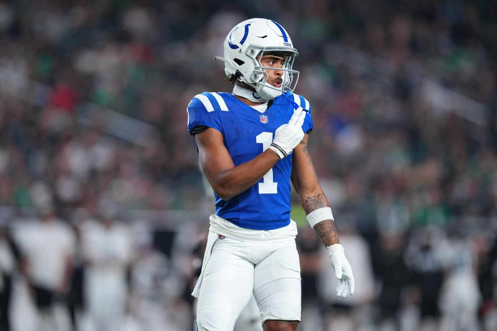
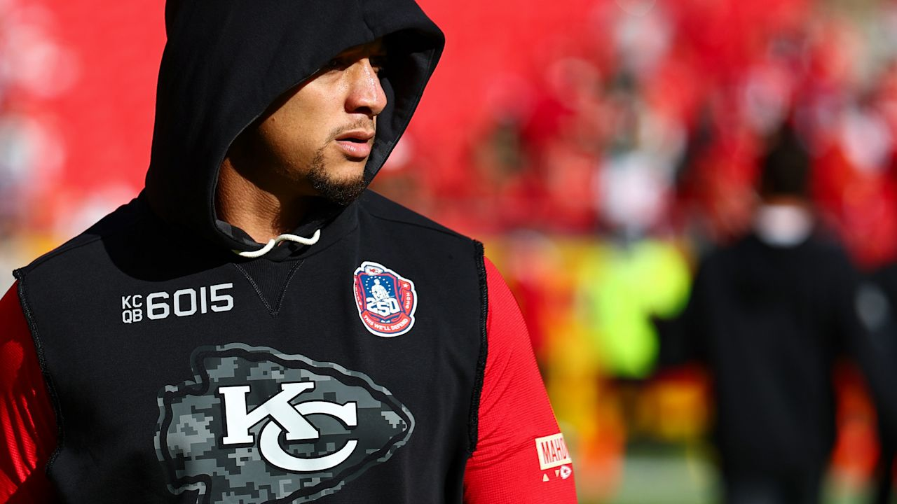

Analysis
Josh Downs gives Mahomes a potent new weapon
Kansas City’s deadline addition brings sharp routes and a knack for beating man coverage to an offense looking for more reliable answers.
The stories. The team. The Kingdom.

Analysis
Kansas City’s deadline addition brings sharp routes and a knack for beating man coverage to an offense looking for more reliable answers.

Analysis
To succeed at this stage in his career, Patrick must enter dark mode.

Injury update
Mahomes practiced fully Wednesday and says his right elbow is improving with treatment as the Chiefs prepare to visit Atlanta.
A closer look at Kansas City football.
The conversation continues
Comments
What's on your mind, Chiefs Kingdom?
Your log lives here. Comments are saved only in this browser and aren't shared with other readers.
Your comments
Start the conversation. Add your first comment above.